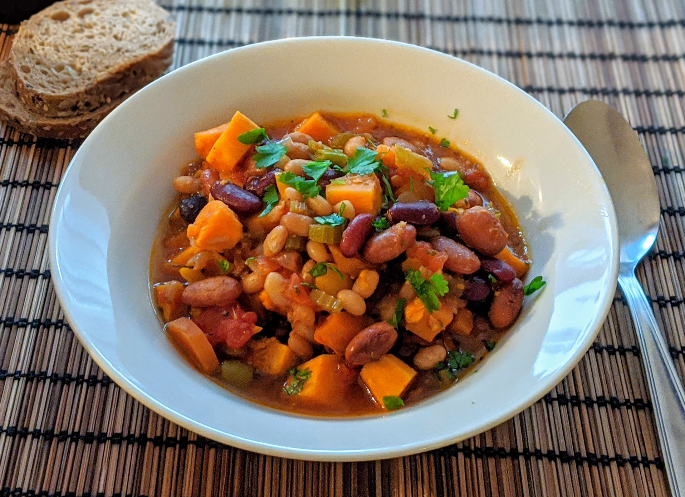

Chili végétarien

Pour 6-8 personnes :
- Une boîte (de 400mL) de haricots rouges
- Une boîte (de 400mL) de haricots noirs
- Une boîte (de 400mL) de haricots blancs ou borlotti
- Une boîte (de 400mL) de tomates concassées
- Une grosse patate douce
- Une grosse carotte
- Deux branches de céleri, ou un fenouil
- Deux ou trois poivrons
- Deux oignons
- Deux gousses d'ail
- Une demi-douzaine de petits piments verts en bocal (voir remarque en-dessous de la recette)
- Un cube de bouillon de légumes
- Une cuillère à soupe de piment en poudre
- Une bonne cuillère à soupe de cumin
- Deux cuillères à soupe d'origan séché
- Sel, poivre, huile d'olive
- Éplucher, émincer et faire revenir les oignons puis l'ail avec de l'huile d'olive dans le fond d'une mijoteuse.
- Lorsque c'est translucide, ajouter les tomates concassées avec leur jus, et faire bouillir avec le cube de bouillon.
- Pendant ce temps, laver, éplucher et couper les autres légumes en morceaux à peu près de la taille d'un haricot. Égoutter et couper les piments en assez gros bouts (pour qu'on les repère facilement) et enlever leurs grains.
- Tout ajouter dans la mijoteuse (c'est normal si il n'y a du liquide que jusqu'au tiers ou à la moitié), faire cuire 8 heures à feu doux.
- Rectifier l'assaisonnement (en sel et poivre), servir chaud, possiblement avec du riz. Si c'est pas assez épicé, mieux vaut rajouter des piments et refaire cuire quelques heures, c'est bien meilleur que rajouter de la poudre de piment à la dernière minute.
Remarque : le type et la quantité de piments à mettre dépend de à quel point on veut un chili épicé. J'aime bien mettre une demi-douzaine de "peperoncini", on sent les épices mais c'est quand même compatible avec des invités qui craignent un peu quand ça arrache. On peut en mettre plus, ou les remplacer par des japaleños si on préfère. Dans tous les cas, je préfère enlever leurs graines pour éviter que le plat ne devienne significativement plus épicé lorsqu'on le fait réchauffer (ou après congélation/décongélation).
Retour à la liste des recettes